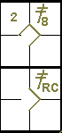

Determining the value of safe hits.
According to rule 9.06 of the OBR, a safe hit shall be scored as a one base hit, two-base hit,
three-base hit or home run when the batter reaches the corresponding base when no error, putout or fielder’s choice
results.
When, with one or more runners on base, the batter advances more than one base on a safe hit and
the defensive team makes an attempt to put out a preceding runner, the scorer shall determine whether the batter made
a legitimate two-base hit or three-base hit, or whether the batter runner advanced beyond first base on the fielder’s
choice
[OBR 9.06(b)].
It should also be borne in mind that a batter cannot be awarded a
three-base hit when a preceding runner is put out on home plate, or would have been put
out but for an error. Nor may the batter be credited with a two-base hit when a preceding runner is put out at third
base or would have been out but for an error. In both cases the batter-runner’s last advance must be recorded as a
fielder’s choice.
In any case, the value of a hit should not be determined from the number of bases advanced
by a preceding runner. A batter may deserve a two-base hit even though a preceding runner advances only one base, or
even none, just as he may deserve only a one-base hit even though he reaches second base, and a preceding runner
advances two bases
[OBR 10.06 comment]. The following examples should help to clarify this.
Example 3:
The runner on first base advances to third on the hit. The right fielder tries unsuccessfully to throw to
third to put out the runner. Thanks to this throw, the batter reaches second safely.
This is not a double, but a single with an advance by fielder’s choice (throw). The continuation of the
batter-runner to second base is noted with a small vertical line joining the first base and second base squares.

|
action {
batter -> BB
}
action {
batter -> 1B9 T95
,
runner1 -> ++
}
|

|
Example 4:
The runner on second advances only one base because he holds back to see if the fly ball is caught. The batter,
however, reaches second base normally.
This is a double even though the runner advanced only one base.

|
action {
batter -> 2B8
}
action {
batter -> 2BRC
,
runner2 -> +
}
|

|
Example 5:
On the hit, the runner on third base moves away then turns back to touch the base, thinking that the ball
might be caught on the fly. The ball nevertheless falls to the ground, becoming a safe hit, and the batter reaches
second base without the runner daring to score.
This is also a two-base hit.

|
action {
batter -> 3B9
}
action {
batter -> 2B8
}
|

|
When the batter attempts to make a two-base hit or a three-base hit by sliding, he must
hold the last base to which he advances. If a batter-runner over slides and is tagged out before getting back to
the base safely, he shall be credited with only as many bases as he attained safely. If a batter runner over slides
second base and is tagged out, the official scorer shall credit him with a one-base hit; if the batter-runner over
slides third base and is tagged out, the official scorer shall credit him with a two-base hit
[OBR 9.06(c)].
It is important to note the difference between reaching a base by sliding and by running. If a
runner overruns a base, he is considered to have safely reached that base, and is credited with a hit corresponding
to the number of that base, even if he is subsequently tagged out trying to return.
However, if he over slides a base, he has not safely reached that base, and the hit will therefore
be scored according to the number of the previous base.
When the batter, after making a safe hit, is called out for having failed to touch a base,
the last base he reached safely shall determine if the official scorer shall credit him with a one-base hit, a
two-base hit or a three-base hit. If a batter-runner is called out after missing home plate, the official scorer
shall credit him with a three-base hit. If a batter-runner is called out for missing third base, the official scorer
shall credit him with a two-base hit.
If a batter-runner is called out for missing second base, the official scorer shall credit
him with a one-base hit. If a batter-runner is called out for missing first base, the official scorer shall credit
him with a time at bat, but no hit [OBR 9.06(d)].
When a batter-runner is awarded two bases, three bases or a home run under the provisions
of Rules 5.06(b)(4) or 6.01(h)(1), the official scorer shall credit the batter-runner with a two-base hit, a
three-base hit or a home run, as the case may be
[OBR 9.06(e)].
NOTE: A batter, who has made a safe hit and, despite being trapped between bases, safely
reaches the next base without any defensive errors, shall be awarded a hit corresponding to the last base he reached
safely.